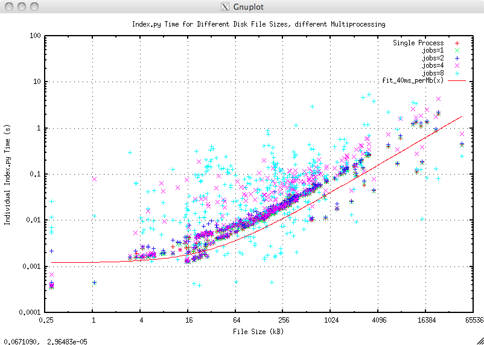

Indexing LIS Files¶
Most petrophysical files are recorded in real time and the recording format is sequential, thus everything depends on what has gone before. This is not very satisfactory for the user who might well wish to access the data in a arbitrary manner - “give me these curves over this interval”. The solution is to create an index to the original file so that it can be accessed as if it is a random access file.
Here we describe how that indexing works and the performance it achieves for the user.
Introduction¶
The LIS file format is a binary, self describing, sequential format with multiple layers of encoding and, in practice, no forward references. LIS files can be large and, generally speaking, the greater part of the file consists of frame data whose format is invariant within any particular Log Pass.
In a dynamic situation, such as a user reading the file, the instantaneous amount of data needed from a LIS file is small compared with the file size. For example plotting 200 feet of a 50Mb file might need only 1/3000 of the data in the file. As the LIS file format is geared to sequential recording, not random access, accessing such a small amount efficiently needs additional software cunning.
TotalDepth’s approach to this is to use indexing. The essential requirements for an indexer are:
- Fast to create an index.
- The index is small.
- The index has sufficiently useful granularity.
- The index can be serialised in a number of ways (as a minimum; XML, binary (e.g. ‘pickle’), JSON?).
- The indexer design is flexible and extensible.
Apart from the cost of design and coding a solution the cost/benefit of indexing can be measured thus:
- The time to creating an index.
- The space required by the index, in-memory or serialised in some form.
- The time, in O(N), terms of accessing N bytes of data.
A design that has low time/space requirements is regarded as a ‘good’ design.
Indexing Design¶
TotalDepth’s LIS indexer works on several levels:
| Level | Description |
|---|---|
| File Level | Indexing of the postion of all Logical Records |
| Logical Records with frame data | Runs of these can be efficiently indexed with Run Length Encoding |
| Within a Logical Record containing frame data | Accessing a particular frame and channel can be by computation with the help of a frame index. In particular this can identify seek/read sequences of any value from any channel in O(1) time. |
Indexing a LIS File¶
The intentions is to find the start position of each Logical Record and a minimal amount of information of that Logical Record. The start position is the size_t value of the file index of, either, the start of the TIF marker for the first Physical Record in the Logical Record (if TIF encoded), or, the start of the first Physical Record in the Logical Record (if not TIF encoded).
As well as recording the file position of the Logical Record the indexer retrieves part or all of the Logical Record contents. This is specialised by Logical Record type thus:
| Logical Record | Index Contents |
|---|---|
| Reel/Tape/File Header/Trailer | The complete contents of the Logical Record. These are small (58 or 128 bytes) but possibly important. |
| Table records | The Logical Record header and the first Component Block. These are variable, large, but possibly important. |
| DFSR | The complete contents of the Logical Record. These are variable size, not particularly large and very important. |
| Logical Records with frame data | Indexed as part of a Log Pass with a RLE object. This records the Logical Record header and the first data word. |
| All other Logical Records | The Logical Record header only. |
Module¶
The Python module that performs file indexing is TotalDepth.LIS.core.FileIndexer
For reference documentation see: FileIndexer.
Example¶
The LIS package has an Index.py module that will index any LIS file. Here is some (selected) output of a single file:
=============================== All records ===============================
tell: 0x00000000 type=128 <TotalDepth.LIS.core.FileIndexer.IndexFileHead object at 0x101b09050>
tell: 0x0000004a type= 34 name=b'CONS' <TotalDepth.LIS.core.FileIndexer.IndexTable object at 0x101b090d0>
<TotalDepth.LIS.core.LogPass.LogPass object at 0x101b09450>
tell: 0x0006141c type=129 <TotalDepth.LIS.core.FileIndexer.IndexFileTail object at 0x101b0c110>
tell: 0x00061466 type=128 <TotalDepth.LIS.core.FileIndexer.IndexFileHead object at 0x101b0c190>
tell: 0x000614b0 type= 34 name=b'CONS' <TotalDepth.LIS.core.FileIndexer.IndexTable object at 0x101b0c210>
<TotalDepth.LIS.core.LogPass.LogPass object at 0x101b0c510>
tell: 0x00065a44 type=129 <TotalDepth.LIS.core.FileIndexer.IndexFileTail object at 0x101b0cad0>
tell: 0x00065a8e type=128 <TotalDepth.LIS.core.FileIndexer.IndexFileHead object at 0x101b0cb50>
tell: 0x00065ad8 type= 34 name=b'CONS' <TotalDepth.LIS.core.FileIndexer.IndexTable object at 0x101b0cbd0>
<TotalDepth.LIS.core.LogPass.LogPass object at 0x101b0cfd0>
tell: 0x000d2c44 type=129 <TotalDepth.LIS.core.FileIndexer.IndexFileTail object at 0x101b10450>
============================= All records DONE ============================
Note that the indexing of a Log Pass is separate since it covers an EFLR and zero or more IFLRs. This is the subject of the next section.
Indexing a Log Pass¶
A Log Pass is described by an EFLR and zero or more IFLRs. In LIS terms this means a DFSR and the associated binary IFLRs. This is a candidate for fairly agressive optimisation since:
- In practice the Logical Records containing the IFLRs are normally adjacent and regular (same size).
- The frame structure is invariant.
Supposing a Log Pass has 18 data channels using representation code 68 (frame length 72 bytes) and each IFLR record contains 24 frames (24*72=1728 bytes). If there are 72 Logical Records then it is fairly easy to to calculate where, in logical space, logical record x is in the file; start + x * 1728 [1].
NOTE: The following describes some of the internals of Log Pass indexing, it is for information only as the LogPass and IndexLogPass objects do this automatically.
Run Length Encoding of Logical Records¶
Run Length Encoding (RLE) is an encoding system that is highly efficient at describing regularly spaced intervals. Since LIS is primarily a recording format the recording software will create and suitably sized buffer for an integer number of frames and other environmental parameters. During recording the buffer will be filled frame by frame. When the buffer is full the buffer will be flushed to file. So a continuos series of IFLRs tends to consist of a series of adjacent Logical Records of the same size followed, possibly, by a single terminating Logical Record that is shorter (by an integer number of frames) than the others.
Module¶
The Python module that performs RLE of Logical Records is TotalDepth.LIS.core.Rle
For reference documentation see: Run Length Encoding Module.
Indexing Frame Data¶
This describes how an index is created to find arbitrary values in a Logical Record containing Frame Data.
Supposing a Log Pass has 18 data channels using representation code 68 (frame length 72 bytes) and each IFLR record contains 24 frames. If there are 72 Logical Records then it is a simple [2] task to calculate where, in logical space, the bytes for channel x and frame y are.
Module¶
The Python module that performs indexing within a Logical Record containing frame data is TotalDepth.LIS.core.Type01Plan.
For reference documentation see: Type01Plan.
Indexing Performance¶
As mentioned above the cost of indexing can be measured with these independent measures:
- The time to creating an index.
- The space required by the index, in-memory or serialised in some form.
- The time per byte to access N bytes of data.
- Any deviation from O(N) performance, N being total file size or size of data read.
The following data was measured using 300+ LIS files totalling of around 300+Mb, the largest being around 50Mb. The LIS module TotalDepth.LIS.RandomFrameSetRead.py was used to conduct the tests.
The original targets for the cost of TotalDepth LIS indexing were:
| Cost ms/Mb | Result |
|---|---|
| <15 | Excellent |
| 15-50 | Good |
| 50-100 | Satisfactory |
| >100 | Unsatisfactory |
Index Time¶
This is simply the actual time taken to create a file level index:

The best fit of all points is the cyan line (index(x) on the plot legend). The best fit for the lines is:
| Line | Description | Colour | Latency (ms) | Cost (ms/Mb) | Result |
|---|---|---|---|---|---|
| PR_1kB(x) | Physical Record length = 1kb | Green | 1.3 | 80 | Satisfactory |
| PR_8kB(x) | Physical Record length = 8kb | Blue | 1.2 | 12 | Excellent |
| PR_DontKnow | Upper bound, worst case | Magenta | 3.0 | 90 | Satisfactory |
| index(x) | Regression fit on all points | Cyan | 1.2 | 39.9 | Good |
However there are some other trends that can be teased out when separating files that have Physical Records of 1kb and those in the data set that have 8kb Physical Records (there were no larger Physical Record sizes in the data set). The green fit (PR_1kb(x) on the plot legend) is the best fit for those files that have Physical Records of 1kb. The blue line (PR_8kb(x) on the plot legend) is the best fit for files that have Physical Records of 8kb, it is almost exactly 8 times faster.
In fact in other tests, not presented here, it was shown that there was a linear speedup with Physical Record size up to their maximum size of 64kb. In fact the dominant factor in indexing time was the number of physical records. This suggests a couple of things:
- Before archiving or processing LIS files rewrite them to their maximum Physical Record size (64kb). This will pay off later when indexing prior to any read operation.
- Rewrite the Physical Record handler (and below) in C or Cython as it seems to be the bottleneck for indexing.
This is actual time taken to create a file level index divided by the file size. This gives some measure of ‘cost’ which is defined here as ms per Mb of data processed, here the size in Mb is the total file size:

The rising costs for smaller files is no real cause for concern, this represents the startup cost of indexing and reading of around 1 to 2 ms. This graph clearly demonstrates O(N), or better, behaviour.
Again the advantage in having 8kb Physical Records is evident in the lower right hand corner. The cost would be further reduced to around 1 to 1.5 ms/Mb by having 64kb Physical Records.
Multi-Processing¶
Most of TotalDepth software supports parallel processing. The LIS command line tool Index.py can create indexes in parallel. The following graph shows the file size plotted against total time to index when indexing around 300 LIS files with different numbers of simultaneous processes. The red line is the best fit for single process indexing that costs about 40 ms/Mb:
The index time rises slightly with increasing number of processes and the scatter rises dramatically with 8 processes presumably because of I/O contention.
Actual wall clock times for indexing all those LIS files for different numbers of simultaneous processes on a four core machine with hyper-threading are:
| Processes | Total time to index (s) | Improvement over No multiprocessing |
|---|---|---|
| No multiprocessing | 18.4 | Datum |
| 1 | 18.3 | 0.995 |
| 2 | 9.9 | 0.538 |
| 4 | 8.9 | 0.484 |
| 8 | 7.6 | 0.413 |
Moving to two processes gives an almost linear speedup, moving from two to four or eight processes gives only slight improvement presumably because the execution time becomes I/O bound.
Index Size¶
It is envisaged that the index will be persisted in some form. Once persisted then the LIS file would only be accessed via the index, any file write operation requires a suitable adjustment to the index.
Persistence techniques could be, for example:
- Stored in a database.
- Serialised in binary form onto the file system.
- Serialised in human readable form, such as XML, onto the file system or database [3].
- Serialised in binary form and attached as a Logical Record to the LIS file it refers to.
TotalDepth and SaaS¶
There is a further imperative to understanding index size; if TotalDepth were to be used, as it was always intended, as Software as a Service (SaaS) where the bulk of the processing is with the data file on the client machine and the processing done on the server then part of the bootstrap process of any transaction is for the client to index the file and send the index to the server. In that case it is important to keep the index size small.
Thus the size of the index content is a significant consideration.
The following graph measures the size of the index when serialised with Python’s cPickle module, Pickled size is in kb (red markers, left scale) and compared as a percentage of the original file size (green markers, right scale):

The pickled size shows a wide range that is representative of the wide range of LIS inputs. The best fit for size (albeit with a large scatter) is 5kb + 0.6% of the file size which is entirely satisfactory [the upper bound being 42kb + 2.3% and the lower bound being just 1.2kb + 0.08% with larger files tending towards the lower bound].
The relative size of the index shows a strong downward trend (blue line) for files below 4Mb, before levelling off at the 0.1 to 3% mark. This is quite satisfactory for the use cases described above including SaaS. This graph clearly demonstrates O(N), or better, behaviour.
Indexing Performance Improvements¶
As noted above there is a substantial improvement in indexing when large Physical Record sizes are used.
It is also likely that significant improvement could be made if the RawStream, TifMarker and PhysRec were to be rewritten in C/C++ or Cython. The PhysRec module has a dependency on the RepCode module (easily removed). All three modules have a dependency on the struct module so the limited functionality that they use from there would have to be reproduced, thats pretty easy since it only involves integer manipulation.
So given an ‘average’ cost of indexing of 40 ms/Mb (i.e. a ‘good’ rating) the performance improvements could be:
- Moving to larger Physical Record sizes: x8?
- Integrate the existing (in another project) code in C that handles Raw Stream/TIF/Physical Record handling into this project. This is known to be about x100 faster (and the index has a lower memory footprint).
The performance improvements would not necessarily combine as they are mutually dependent but the combination might reduce the cost to around 2 to 8 ms/MB, an exceptionally good performance indeed.
See Performance Improvements for other performance improvements
LIS Read Performance via an Index¶
This is described here Performance of TotalDepth
Summary¶
Indexing is not free, it incurs an overhead, but this overhead is acceptable. The overhead is worst for small data sizes where the performance is high in any case. The overhead is low, and the benefit is very great for large or complex data sizes where the performance, without indexing, could be very poor indeed.
Footnotes
| [1] | Illustrative only, it is slightly more complicated than this. |
| [2] | Well not that simple, there is indirect X-axis to take into account and several other things. |
| [3] | JSON can not handle the index in its current form. |